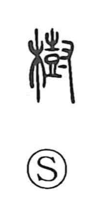

樹

Uncategorized
Kun: ki, ueru, tateru | On: ju
tree ・ standing tree ・ to plant ・ to establish ・ to found
Explanation
A phono-semantic character: the left side is 木, “tree,” and the right side is the phonetic 尌 (ju), a sign depicting a drum being struck by hand. Shirakawa links this drum-beating component to agricultural rites—akin to the auspicious ceremony behind 嘉—in which a plow is ritually purified before a sacred receptacle and drums resound to drive off autumn pests and pray for abundant grain. With 木 added, 樹 evokes the idea that ritual drumbeats bolster the vital force of upright timber. From “tree” and “standing tree,” the sense extends to planting trees (jugei) and, by further development, to establishing or setting something firmly in place (juritsu).